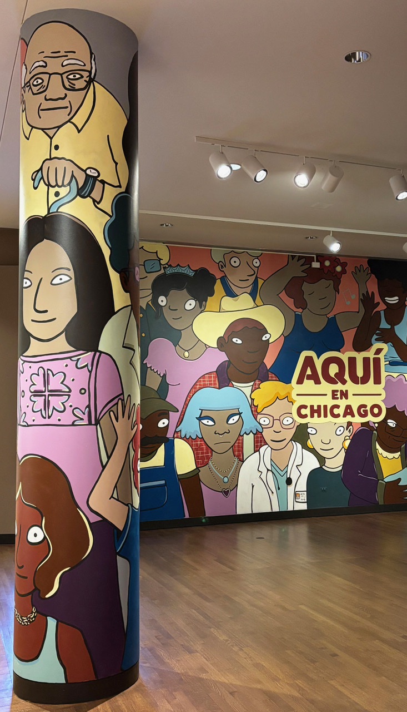
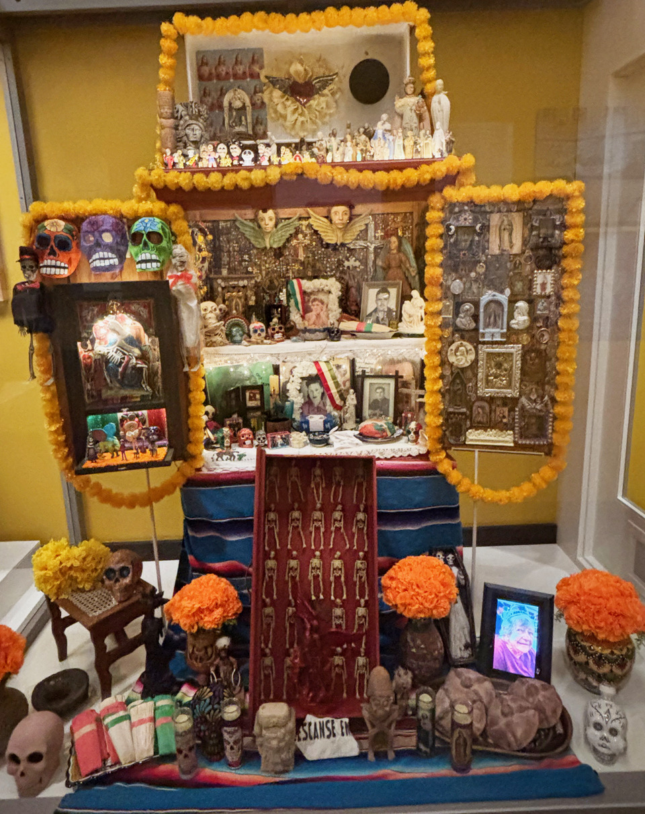
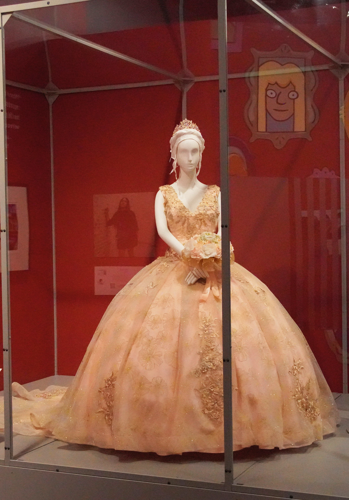
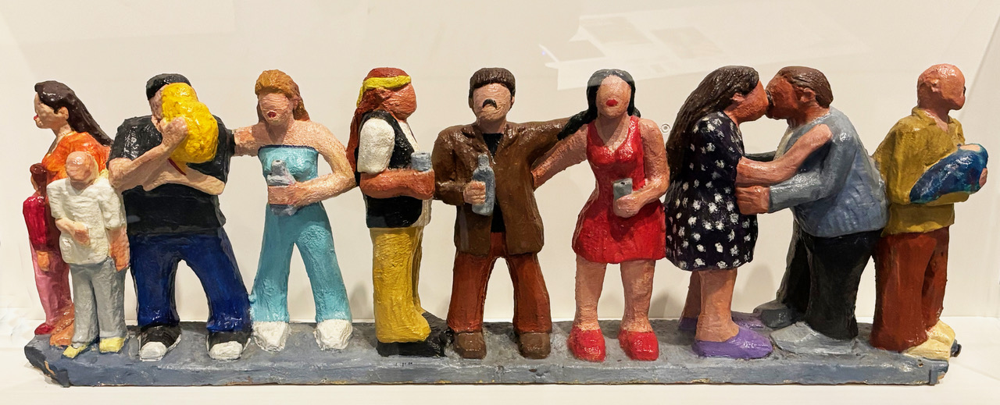
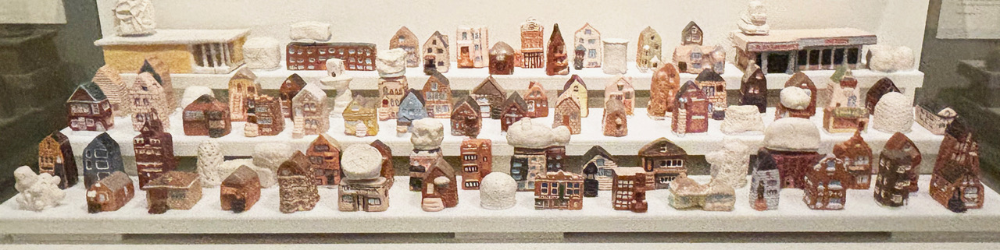
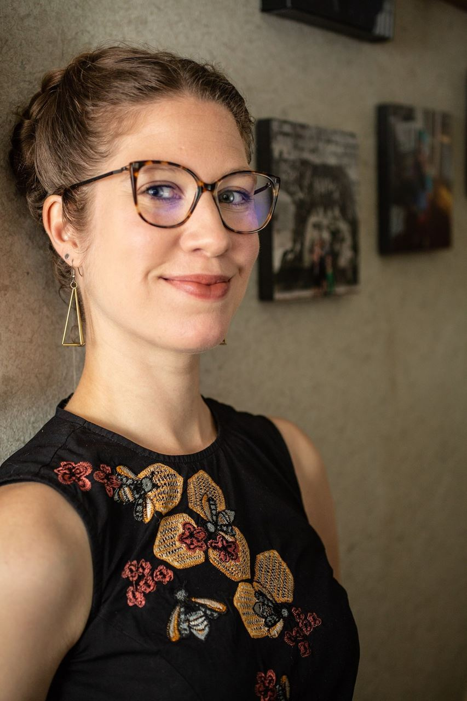

Elena Gonzales, Curator of Civic Engagement & Social Justice, is the star of the show. She has worked relentlessly for several years—meeting with dozens of leaders and organizations to capture the essence and spirit of Chicago’s Latino/a/e communities and bring them into the limelight at the Chicago History Museum. Her depth of knowledge and excitement leaves guests breathless and inspired to know more and celebrate all that Latino residents have contributed to the rich fabric of our city.
The project aptly began with a protest, explains Gonzales. “Students from Instituto Justice and Leadership Academy visited CHM on a field trip in 2019 with their social studies class. They were shocked that nothing in the museum’s 14,000 square foot flagship exhibition talked about the Latine third of the city. They dedicated the rest of their semester to bringing this to the Museum’s attention and making change.”
“The students whose brave work inspired this project hoped to see their mothers, grandmothers, aunts, and sisters honored through many portrayals of Latina identity.” —Elena Gonzales
Elated by the completion of the exhibit, Gonzales adds, “I’ve been looking forward to celebrating Women’s History with Aquí en Chicago for ages!”

The beautiful mural artworks used in the exhibit were designed in conjunction with Cecilia Beaven, a local muralist from Mexico City, where murals reshaped national identity in the 20th century. Gonzales explains, “Her murals, icons, and color palette are essential to making CHM welcoming to all and creating a positive, vibrant, and beautiful experience in the gallery.”
The exhibit displays are diverse, colorful, and insightful. You will see unique sculptures, multimedia artworks, posters, artifacts, clothing, Hull-House Kilns pottery, and even a fascinating display for Day of the Dead.




The joint event is the brainchild of Joyce Winnecke, a former president of the IWF and a current member of both the IWF and the Guild. Known as a paragon of the newspaper and new media industries, she wanted to bring the exhibit to a broader audience. “I was immediately captivated by this exhibit and by Elena Gonzales. The energy and expertise she brings to this makes it come to life,” Winnecke says. “This is such a beautiful insight into the fabric of Chicago. Everyone should see it. I also love the backstory—that the exhibit was born of high school kids’ protests of the museum.”
Clarissa Cutler and Lindsay Roberts, co-chairs of the Guild Program Committee, were enthusiastic about doing an Aquí en Chicago event with IWF. “We work hard at the Guild to bring important and fun activities to our members and guests, and we love to work with community partners to bring the best of Chicago to more people,” says Cutler. “Working with the IWF was a natural—a fair number of our members belong to both organizations,” adds Roberts.
Soon, they were working with IWF’s Peggy Parfenoff, a senior advisor to Conlon Public Strategies, to put together a joint program. She says, “What a delight to celebrate International Women’s Day with the Guild and IWF Chicago in exploring Latina women’s contributions to our great city.” Parfenoff had met Gonzales two years earlier when she spoke to her Social Change Communications class at Columbia College Chicago, and she knew she was a terrific speaker. “It was evident that this exhibition was a passion project for Elena and it shows by the way she tells the story from the community’s perspective in a compelling way,” Parfenoff adds.

The food will be a special treat, featuring passed hors d’oeuvres inspired by rich Latin American flavors. The menu includes tuna crudo con tigre de leche de ají, tlayudas de pollo tinga, esquites with huitlacoche aioli, pastel de tres leches, and more. Beverages will include a selection of red and white wines, national premium beer of Puerto Rico—Medalla Light—and additional refreshments.
Catherine Grahn, one of the main sponsors of the event, urges everyone to attend. “Please come and bring your friends. You will meet some wonderful people—men are welcome to attend too—and learn a lot about the history and cultural vibrance of our city.”
Tuesday, March 10, 2026
4:00 p.m. — Aquí en Chicago open for self-guided exploration
5:00 p.m. — Event begins; drinks served
5:30 p.m. — Presentation by Curator Elena Gonzales
6:15 p.m. — Reception; drinks & heavy hors d’oeuvres
7:00 p.m. — Evening concludes
Tickets: $50, available through the Guild or IWF
Chicago History Museum • 1601 N. Clark St., Chicago, IL 60614